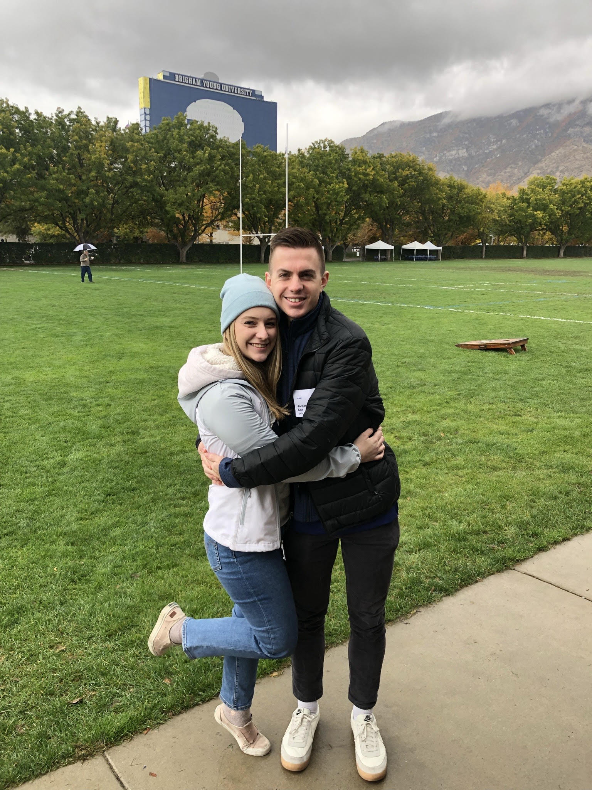

Having grown up with five older brothers and an entrepreneur for a father, I’ve always
lived in a competitive and high-achieving environment. My family’s example of pursuing
opportunities and valuing hard work has led me from Mesa, AZ to Brigham Young University
and KPMG.
I am a Pre-Business student looking to apply to either the Accounting, Strategy, or Supply
Chain program this summer and I currently have experience in FTA compliance, management,
bookkeeping, and financial & data analysis.
My interests include volleyball, fantasy basketball, Raising Cane's Chicken Fingers, Settlers
of Catan, Monopoly, attending church services, and spending time with my wife Melanie.

Enjoy a quick video of my high school volleyball highlights (I saved the best for last ;) ).
My Resume
- Experience
- KPMG LLP - Trade Analyst
- March 2021 - Present (1 Year, 2 Month)
- HCMoneyball - Research Team Lead
- January 2021 - July 2021 (7 Months)
- Greenix Holdings- Accounts Receivable Clerk
- October 2020 - March 2021 (6 Months)
- KPMG LLP - Trade Analyst
- Education
- Brigham Young University
- September 2020 - Present
- Anticipated Masters in Accounting 2025
- GPA: 3.5
- Mesa Community College
- January 2019 - May 2020
- General Studies
- GPA: 4.0
- Mesa High School
- High School Diploma (2016)
- GPA: 3.6
- 2x Varsity Boys Volleyball Team Captain
- 1x State Runner-Up
- Ironjack Weightlifting Award
- Brigham Young University
- Skills
- Spanish
- Reading, Writing, and Speaking Proficiency
- Microsoft Office
- Excel - VBA, Pivot Tables, Forecasting
- Outlook - Emailing, Scheduling
- Teams - Meetings, Presentations
- Visual Studio Code
- HTML
- CSS
- JavaScript
- Spanish
Contact me at either:
- Cell Phone: 480-408-7901 or
- Email: jordancox480@gmail.com
Check out my LinkedIn profile!
Back to Top